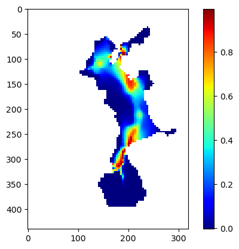
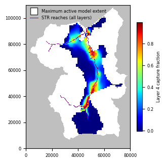
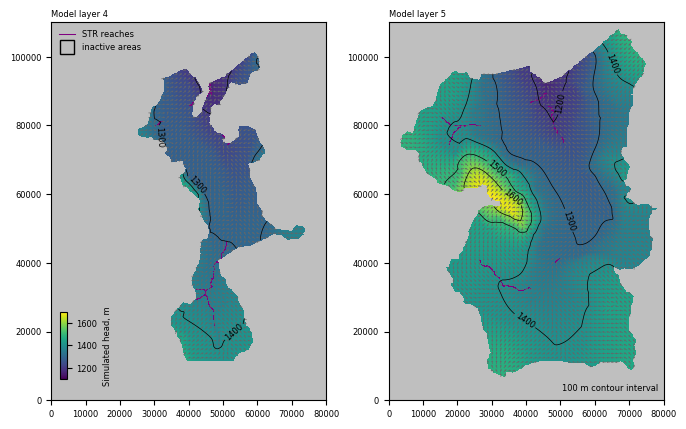

Note
This page was generated from groundwater_paper/Notebooks/uspb.ipynb.
Interactive online version: 
Capture fraction example
From: Bakker, Mark, Post, Vincent, Langevin, C. D., Hughes, J. D., White, J. T., Starn, J. J. and Fienen, M. N., 2016, Scripting MODFLOW Model Development Using Python and FloPy: Groundwater, v. 54, p. 733–739, https://doi.org/10.1111/gwat.12413.
[1]:
import os
import sys
import numpy as np
import scipy.ndimage
import matplotlib as mpl
import matplotlib.pyplot as plt
try:
import flopy
except:
fpth = os.path.abspath(os.path.join("..", "..", ".."))
sys.path.append(fpth)
import flopy
print(sys.version)
print("numpy version: {}".format(np.__version__))
print("matplotlib version: {}".format(mpl.__version__))
print("flopy version: {}".format(flopy.__version__))
3.10.10 | packaged by conda-forge | (main, Mar 24 2023, 20:08:06) [GCC 11.3.0]
numpy version: 1.24.3
matplotlib version: 3.7.1
flopy version: 3.3.7
[2]:
ws = os.path.join("temp")
if not os.path.exists(ws):
os.makedirs(ws)
[3]:
fn = os.path.join("..", "uspb", "results", "USPB_capture_fraction_04_01.dat")
cf = np.loadtxt(fn)
print(cf.shape)
(110, 80)
[4]:
cf2 = scipy.ndimage.zoom(cf, 4, order=0)
print(cf2.shape)
(440, 320)
[5]:
c = plt.imshow(cf2, cmap="jet")
plt.colorbar(c);

[6]:
wsl = os.path.join("..", "uspb", "flopy")
ml = flopy.modflow.Modflow.load("DG.nam", model_ws=wsl, verbose=False)
[7]:
nlay, nrow, ncol = ml.nlay, ml.dis.nrow, ml.dis.ncol
xmax, ymax = ncol * 250.0, nrow * 250.0
[8]:
plt.rcParams.update({"font.size": 6})
fig = plt.figure(figsize=(3.25, 4.47))
ax1 = plt.gca()
ax1.set_aspect("equal")
mm1 = flopy.plot.PlotMapView(model=ml, layer=4)
plt.xlim(0, xmax)
plt.ylim(0, ymax)
mm1.plot_inactive(color_noflow="0.75")
c = plt.imshow(cf2, cmap="jet", extent=[0, ncol * 250.0, 0, nrow * 250.0])
cb = plt.colorbar(c, shrink=0.5)
cb.ax.set_ylabel("Layer 4 capture fraction")
mm1.plot_bc(ftype="STR", plotAll=True)
plt.plot(
[-10000],
[-10000],
marker="s",
ms=10,
lw=0.0,
mec="0.2",
mfc="white",
label="Maximum active model extent",
)
plt.plot(
[-10000, 0],
[-10000, 0],
color="purple",
lw=0.75,
label="STR reaches (all layers)",
)
leg = plt.legend(loc="upper left", numpoints=1, prop={"size": 6})
leg.draw_frame(False)
plt.xticks([0, 20000, 40000, 60000, 80000])
plt.tight_layout()
plt.savefig(os.path.join(ws, "capture_fraction_010y.png"), dpi=300);

Rerun the model after changing workspace and writing input files
[9]:
ml.change_model_ws(ws)
ml.exe_name = "mf2005dbl"
ml.write_input()
ml.run_model(silent=True)
[9]:
(True, [])
[10]:
hedObj = flopy.utils.HeadFile(os.path.join(ws, "DG.hds"), precision="double")
h = hedObj.get_data(kstpkper=(0, 0))
cbcObj = flopy.utils.CellBudgetFile(
os.path.join(ws, "DG.cbc"), precision="double"
)
frf = cbcObj.get_data(kstpkper=(0, 0), text="FLOW RIGHT FACE")[0]
fff = cbcObj.get_data(kstpkper=(0, 0), text="FLOW FRONT FACE")[0]
qx, qy, qz = flopy.utils.postprocessing.get_specific_discharge(
(frf, fff, None), ml
)
[11]:
cnt = np.arange(1200, 1700, 100)
f, (ax1, ax2) = plt.subplots(
1, 2, figsize=(6.75, 4.47), constrained_layout=True
)
ax1.set_xlim(0, xmax)
ax1.set_ylim(0, ymax)
ax2.set_xlim(0, xmax)
ax2.set_ylim(0, ymax)
ax1.set_aspect("equal")
ax2.set_aspect("equal")
mm1 = flopy.plot.PlotMapView(model=ml, ax=ax1, layer=3)
h1 = mm1.plot_array(h, masked_values=[-888, -999], vmin=1100, vmax=1700)
mm1.plot_inactive(color_noflow="0.75")
mm1.plot_bc(ftype="STR")
q1 = mm1.plot_vector(
qx,
qy,
istep=5,
jstep=5,
normalize=True,
color="0.4",
scale=70,
headwidth=3,
headlength=3,
headaxislength=3,
)
c1 = mm1.contour_array(
h, masked_values=[-888, -999], colors="black", levels=cnt, linewidths=0.5
)
ax1.clabel(c1, fmt="%.0f", inline_spacing=0.5)
mm2 = flopy.plot.PlotMapView(model=ml, ax=ax2, layer=4)
h2 = mm2.plot_array(h, masked_values=[-888, -999], vmin=1100, vmax=1700)
mm2.plot_inactive(color_noflow="0.75")
mm2.plot_bc(ftype="STR")
q2 = mm2.plot_vector(
qx,
qy,
istep=5,
jstep=5,
normalize=True,
color="0.4",
scale=70,
headwidth=3,
headlength=3,
headaxislength=3,
)
c2 = mm2.contour_array(
h, masked_values=[-888, -999], colors="black", levels=cnt, linewidths=0.5
)
ax2.clabel(c2, fmt="%.0f", inline_spacing=0.5)
ax3 = f.add_axes([0.08, 0.125, 0.01, 0.15])
cb = plt.colorbar(h2, cax=ax3)
cb.ax.set_ylabel("Simulated head, m")
ax1.plot(
[-10000, 0], [-10000, 0], color="purple", lw=0.75, label="STR reaches"
)
ax1.plot(
[-10000],
[-10000],
marker="s",
ms=10,
lw=0.0,
mec="black",
mfc="None",
label="inactive areas",
)
leg = ax1.legend(loc="upper left", numpoints=1, prop={"size": 6})
leg.draw_frame(False)
ax1.text(
0.0, 1.01, "Model layer 4", ha="left", va="bottom", transform=ax1.transAxes
)
ax2.text(
0.98,
0.02,
"100 m contour interval",
ha="right",
va="bottom",
transform=ax2.transAxes,
)
ax2.text(
0.0, 1.01, "Model layer 5", ha="left", va="bottom", transform=ax2.transAxes
)
plt.savefig(os.path.join(ws, "uspb_heads.png"), dpi=300);

[12]:
fn = os.path.join("..", "uspb", "results", "USPB_capture_fraction_04_10.dat")
cf = np.loadtxt(fn)
cf2 = scipy.ndimage.zoom(cf, 4, order=0)
[13]:
fig = plt.figure(figsize=(3.25, 4.47), constrained_layout=True)
ax1 = plt.gca()
ax1.set_aspect("equal")
mm1 = flopy.plot.PlotMapView(model=ml, layer=4)
plt.xlim(0, xmax)
plt.ylim(0, ymax)
mm1.plot_inactive(color_noflow="0.75")
c = plt.imshow(cf2, cmap="jet", extent=[0, ncol * 250.0, 0, nrow * 250.0])
cb = plt.colorbar(c, shrink=0.5)
cb.ax.set_ylabel("Layer 4 capture fraction")
mm1.plot_bc(ftype="STR", plotAll=True)
plt.plot(
[-10000, 0],
[-10000, 0],
color="purple",
lw=0.75,
label="STR reaches (all layers)",
)
plt.plot(
[-10000],
[-10000],
marker="s",
ms=10,
lw=0.0,
mec="black",
mfc="None",
label="Layer 5 inactive area",
)
leg = plt.legend(loc="upper left", numpoints=1, prop={"size": 6})
leg.draw_frame(False)
plt.xticks([0, 20000, 40000, 60000, 80000])
plt.savefig(os.path.join(ws, "capture_fraction_100y.png"), dpi=300);

[ ]: